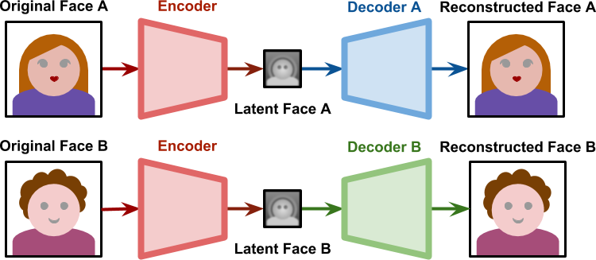

1
Understanding the Technology Behind DeepFakes
Neural networks can be used to compress and decompress images.
The diagram above shows an image (in this specific case, a face) being fed to an encoder. Its result is a lower dimensional representation of that very same face, which is sometimes referred to as base vector or latent face. Depending on the network architecture, the latent face might not look like a face at all. When passed through a decoder, the latent face is then reconstructed. Autoencoders are lossy, hence the reconstructed face is unlikely to have the same level of detail that was originally present.
The programmer has full control over the shape of the network: how many layers, how many nodes per layer and how they are connected. The real knowledge of the network is stored in the edges which connect nodes. Each edge has a weight, and finding the right set of weights that make the autoencoder works like described is a time-consuming process.
Training a neural network means optimising its weights to achieve a specific goal. In the case of a traditional autoencoder, the performance of a network is measured on how well it reconstructs the original image from its representation in latent space.
 If the network has generalised well enough what makes a face, the latent space will represent facial expressions and orientations. This means generating a face for Subject B with the same expression and orientation of Subject A.
If the network has generalised well enough what makes a face, the latent space will represent facial expressions and orientations. This means generating a face for Subject B with the same expression and orientation of Subject A.
 To better understand what this means, you can have a look at the animation below. On the left, faces of UI Artist Anisa Sanusi are extracted from a video (link) and aligned. On the right, a trained neural network is reconstructing the face of game designer Henry Hoffman to match Anisa’s expression.
It should be obvious, at this point, that the technology behind deep fakes is not constrained on faces. It can be used, for instance, to turn apples into kiwis.
What is important is that the two subjects used in the training share as many similarities as possible. This is to ensure that the shared encoder can generalise meaningful features that are easy to transfer. While this technique will work on both faces and fruits, is unlikely to convert faces into fruits.
To better understand what this means, you can have a look at the animation below. On the left, faces of UI Artist Anisa Sanusi are extracted from a video (link) and aligned. On the right, a trained neural network is reconstructing the face of game designer Henry Hoffman to match Anisa’s expression.
It should be obvious, at this point, that the technology behind deep fakes is not constrained on faces. It can be used, for instance, to turn apples into kiwis.
What is important is that the two subjects used in the training share as many similarities as possible. This is to ensure that the shared encoder can generalise meaningful features that are easy to transfer. While this technique will work on both faces and fruits, is unlikely to convert faces into fruits.
Training Deepfakes
It is important to notice that if we train two autoencoders separately, they will be incompatible with each other. The latent faces are based on specific features that each network has deemed meaningful during its training process. But if two autoencoders are trained separately on different faces, their latent spaces will represent different features. What makes face swapping technology possible is finding a way to force both latent faces to be encoded on the same features. Deepfakes solved this by having both networks sharing the same encoder, yet using two different decoders.  During the training phase, these two networks are treated separately. The Decoder A is only trained with faces of A; the Decoder B is only trained with faces of B. However, all latent faces are produced by the same Encoder. This means that the encoder itself has to identify common features in both faces. Because all faces share a similar structure, it is not unreasonable to expect the encoder to learn the concept of “face” itself.Generating Deepfakes
When the training process is complete, we can pass a latent face generated from Subject A to the Decoder B. As seen in the diagram below, the Decoder B will try to reconstruct Subject B, from the information relative to Subject A.
If the network has generalised well enough what makes a face, the latent space will represent facial expressions and orientations. This means generating a face for Subject B with the same expression and orientation of Subject A.
To better understand what this means, you can have a look at the animation below. On the left, faces of UI Artist Anisa Sanusi are extracted from a video (link) and aligned. On the right, a trained neural network is reconstructing the face of game designer Henry Hoffman to match Anisa’s expression.
It should be obvious, at this point, that the technology behind deep fakes is not constrained on faces. It can be used, for instance, to turn apples into kiwis.
What is important is that the two subjects used in the training share as many similarities as possible. This is to ensure that the shared encoder can generalise meaningful features that are easy to transfer. While this technique will work on both faces and fruits, is unlikely to convert faces into fruits.